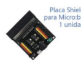
Ficha 01 · Conexiones
Placa Shield para micro:bit
Base de conexión del kit. Permite conectar sensores y actuadores sin protoboard.
6 actividades
Ver las actividadesAprende a conectar módulos y a programar con los bloques estándar de Microsoft MakeCode. Para cada pieza encontrarás seis actividades graduadas, con pistas y comprobaciones. Los esquemas de conexión son los originales del fabricante.
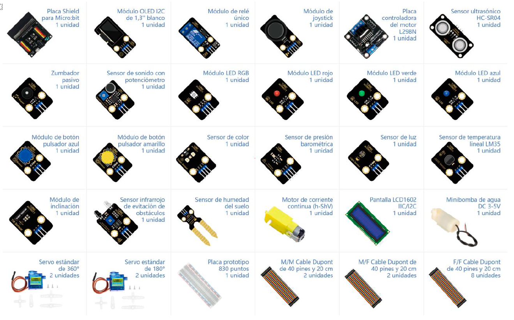
La fotografía te ayudará a localizar cada pieza. Abre una ficha para encontrar primero su esquema de conexión y después las seis actividades.

Base de conexión del kit. Permite conectar sensores y actuadores sin protoboard.
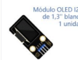
Pantalla gráfica pequeña para mostrar texto, números o iconos.
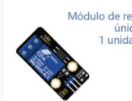
Interruptor controlado electrónicamente para activar o desactivar otros dispositivos.
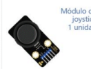
Control analógico con ejes X e Y y pulsación central.
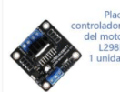
Controlador para motores de corriente continua.
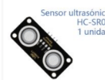
Mide distancias mediante eco ultrasónico.
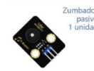
Emite sonidos y tonos controlados por la micro:bit.
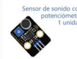
Detecta sonido o nivel de ruido.

LED capaz de emitir varios colores mezclando rojo, verde y azul.
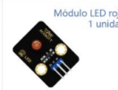
Pequeño LED para aprender a controlar una salida digital.
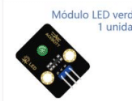
LED de señalización similar al rojo, útil para códigos de estado.
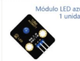
Otro LED sencillo para programar salidas.
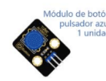
Pulsador externo para introducir acciones manuales.

Segundo pulsador externo para actividades con dos entradas.

Módulo para reconocer colores cercanos.
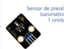
Mide presión atmosférica y, a veces, temperatura.
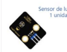
Sensor analógico para medir la intensidad de la luz.
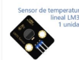
Sensor analógico de temperatura con respuesta lineal.
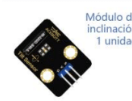
Detecta si el módulo cambia de posición o inclinación.
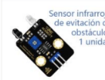
Detecta si hay un objeto cerca mediante un haz infrarrojo.
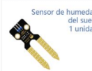
Permite estimar la humedad del sustrato.

Motor sencillo para movimiento rotativo continuo.
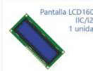
Pantalla de texto de 16×2 caracteres.
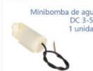
Pequeña bomba para mover agua en proyectos de riego.

Servo de rotación continua para movimiento similar a un motor controlado.

Servo posicional para mover un eje a distintos ángulos.
Las fichas de esta web no mezclan los programas originales de ACEBOTT con las actividades nuevas. Si deseas consultar el material del fabricante, puedes descargarlo completo en un único archivo, que contiene el manual en español y los 37 programas originales .hex (sin duplicados en inglés).
Los esquemas oficiales de conexión ya están incluidos en las fichas. Este enlace es opcional para alumnado y profesorado.